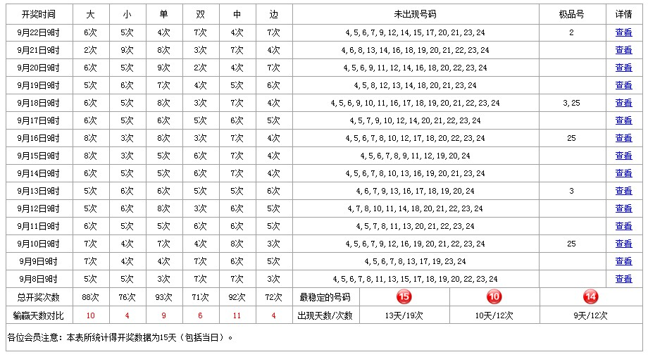

此统计图模块是组合显示了前15天内每天的每个时间段内的统计数据，时间段可让用户自定义选择，在表格上方提供了复选框用户可在此框内选择需要查询的某一个小时或某三个小时的数据。根据用户所选择的指定时间段系统会显示出的内容为：
显示范围为当前查询时的前15天（也可能包括查询当天）
大和小 单和双 中和边每种开奖结果的次数（每天）
大和小 单和双 中和边每种开奖结果的次数相加总和（15天）
大和小 单和双 中和边的每组结果的开奖次数多少对比（次数相同的天数不做记录）
未出现过的号码（每天）
出现过的极品号（每天）
详细走势图查看（每天）
15天内最稳定的3个开奖号码以及它们出现的天数和次数（比较规则为先比较出现天数最多的3个号码，若天数相同的号码超过3个再按出现总次数最的）。